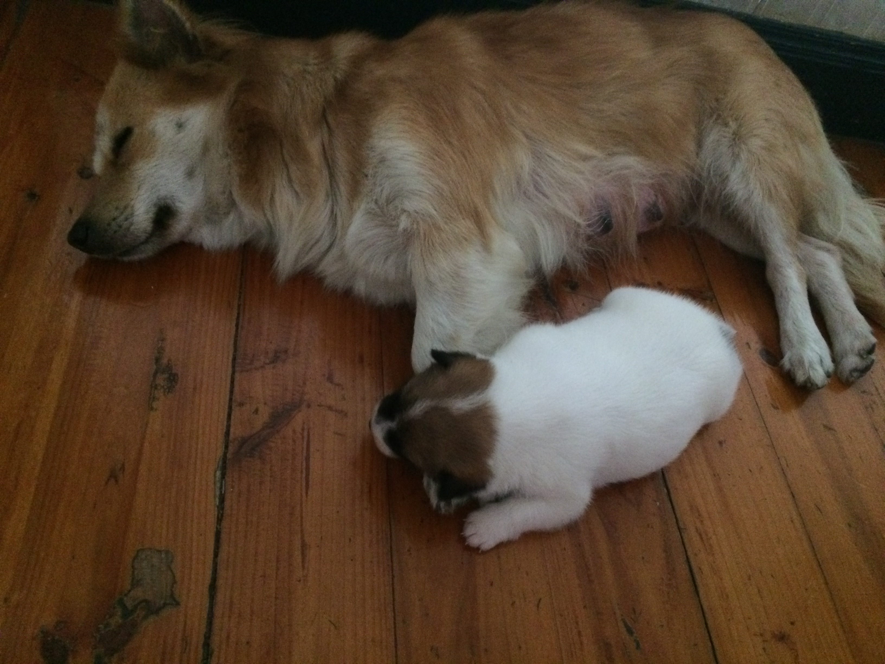
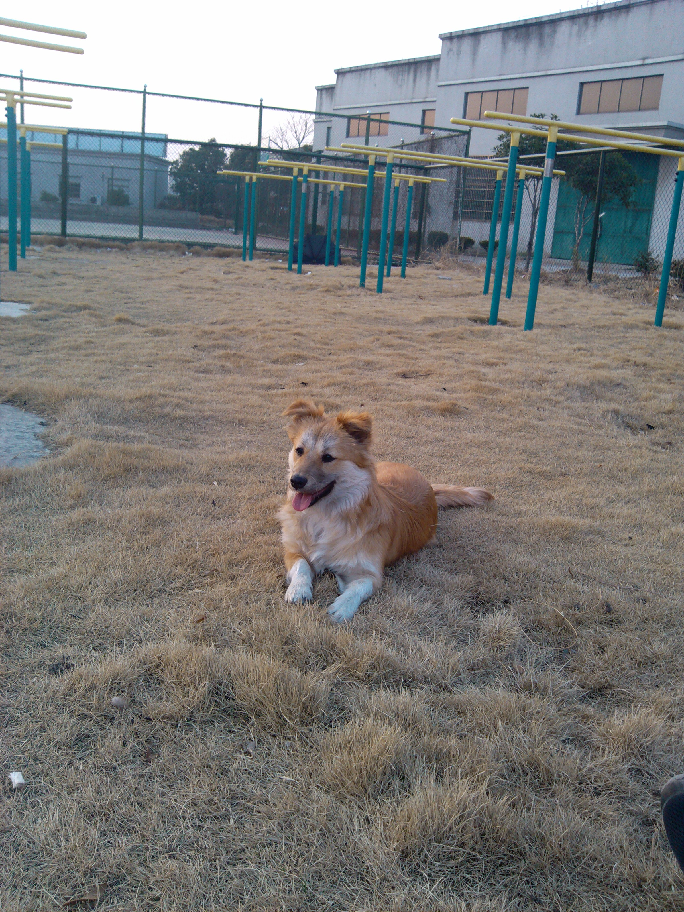
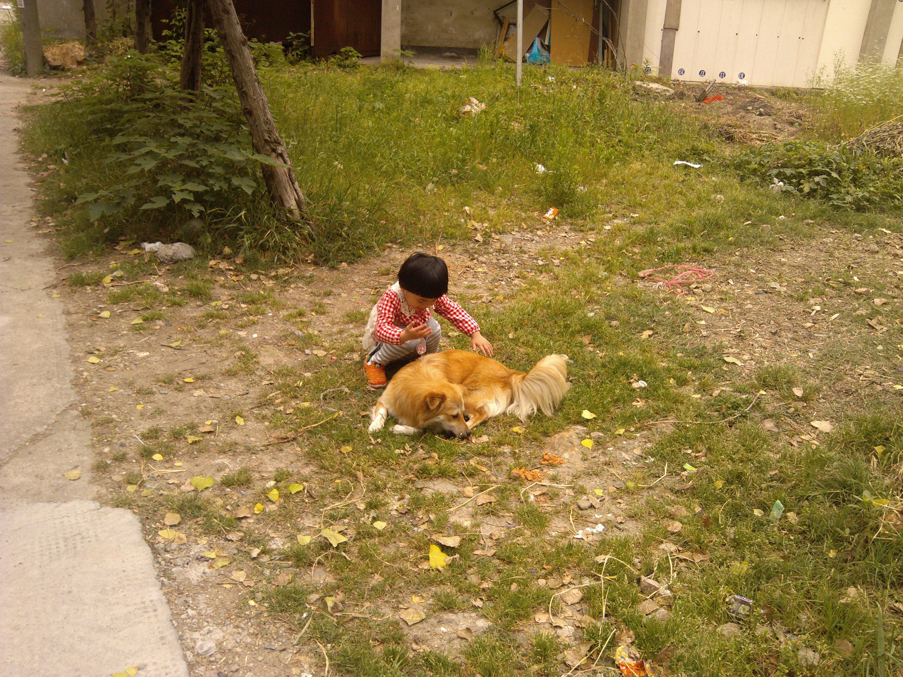
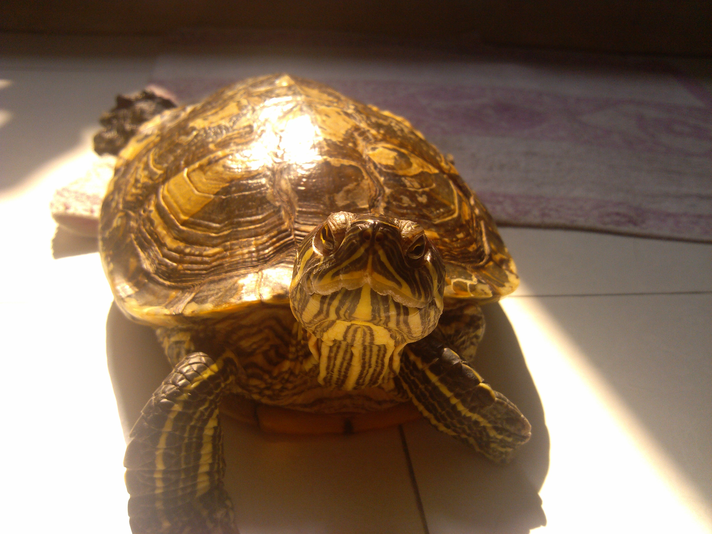
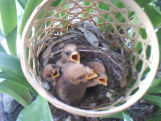
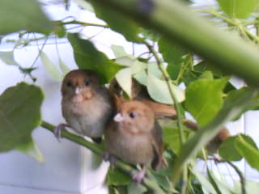
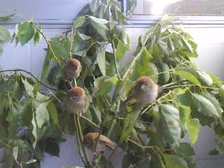
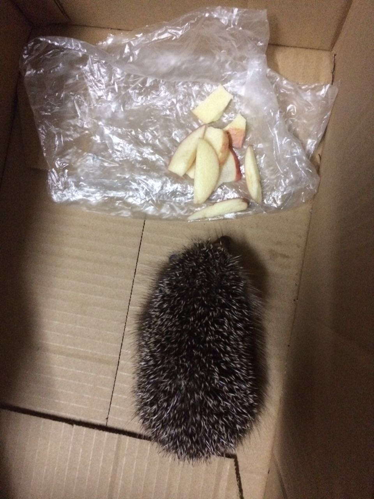

I have a dog. We call her Shi Ba. Shi Ba means eighteen in Chinese. Because Ms.E gave her to me on August 18th, 2013.
  The turtle has been in the apartment for more than 10 years, I can't even remember when we bought it. It has laid several eggs, so I think it's a female. It likes to hide in the quilt during the winter. One day, my Mom didn't notice it was hiding in the quilt and took the quilt out to the balcony to get some sunsine. It fell from the balcony to the ground and broke its shell. Luckily, it survived.
My Mom found the fledgings in an abandoned(or maybe the parents abandoned the nest becasue they saw human getting too close to it) nest in her field. Then we decided to keep them till they can fly and live on their own. They left one by one and the last one flew away on the last day of my college entrance exam.
  My parents found this hedgehog when they were taking a walk in August, 2017. Update: it's released to where they found it 3 days later.
